Visit diary
Every time something moves in the box, the camera notices. This page counts the looks until a tit decides to stay.
Day by day
visit false alarm last 14 days, one row per day, number of visits on the right
Time of day
All visits so far, counted by the hour in which they happened.
All entries
| Date | Time | What happened | |
|---|---|---|---|
| 12 Nov 2026 | 12:33 | Visit | About a minute inside the box, twelve model hits between 0.66 and 0.91. First visit published as a report. |
| 11 Nov 2026 | 11:13 | Visit | Came back right after and stayed for about a minute. Model scores up to 0.59. |
| 11 Nov 2026 | 11:09 | Visit | Stayed inside for almost two minutes, after a first short look at 11:08. Model scores up to 0.56. |
| 11 Nov 2026 | 10:07 | Visit | Stayed for about 25 seconds, first at the entrance, then on the floor. Model scores up to 0.42. |
| 8 Nov 2026 | 12:11 | Visit | Stayed inside for about 45 seconds. Model scores up to 0.85. |
| 5 Nov 2026 | 08:14 | Visit | Hung in the entrance for about 50 seconds. Counted as occupied. |
| 4 Nov 2026 | 10:43 | Visit | Looked in again. Head and beak at the entrance, model score up to 0.65. |
| 4 Nov 2026 | 10:01 | Visit | A short look. Head and beak at the entrance. |
| 28 Oct 2026 | 10:51 | Visit | A short look. Head and beak at the entrance. |
| 28 Oct 2026 | 08:52 | Visit | Stayed inside for about a minute and a half. The model followed it in 11 of 17 pictures. |
| 27 Oct 2026 | 09:33 | Visit | A short look. Only head and beak reach into the picture. |
| 26 Oct 2026 | 13:49 | False alarm | False alarm: sunlight at the entrance and a dust speck the model took for a bird. |
| 26 Oct 2026 | 10:15 | Visit | Stayed inside for about three minutes. |
| 25 Oct 2026 | 14:45 | False alarm | False alarm: sunlight at the entrance. |
| 22 Oct 2026 | 12:44 | Visit | Counted as occupied for about a minute and a half. |
| 22 Oct 2026 | 10:26 | Visit | Moved again while still inside. |
| 22 Oct 2026 | 10:24 | Visit | Counted as occupied for about three minutes. |
| 19 Oct 2026 | 12:39 | Visit | A short look. |
| 19 Oct 2026 | 12:25 | Visit | Another visit, counted as occupied for about a minute and a half. |
| 19 Oct 2026 | 12:22 | Visit | Counted as occupied for about a minute and a half. |
| 17 Oct 2026 | 15:56 | False alarm | False alarm: a patch of sunlight on the wall. |
| 17 Oct 2026 | 13:48 | Visit | Looked in again. |
| 17 Oct 2026 | 13:22 | Visit | Looked in. Only head and beak reach into the picture. |
| 12 Oct 2026 | 12:44 | Visit | Looked in several times within three minutes. |
Latest visits: 22 October
Two of the pictures from this day. The model drew a frame around the bird both times, but its score (0.08) is below the threshold of 0.15, so the pictures were saved as “no bird” and only the motion check raised the alert.
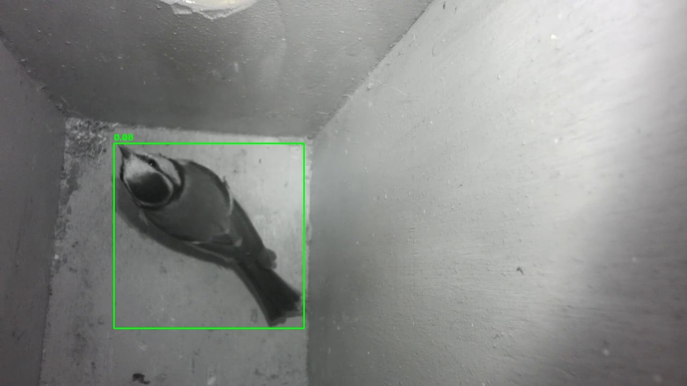
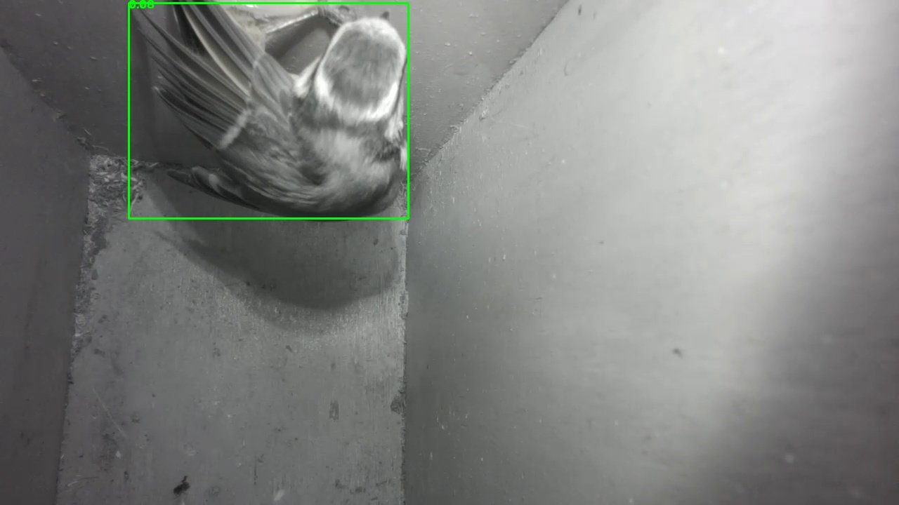
Latest visit: 26 October
At 10:15 a tit came in and stayed about three minutes. This time the model saw it clearly, with a score of 0.58, well above the threshold. The second, tiny frame on the wall to the right is not a bird. More on that below.
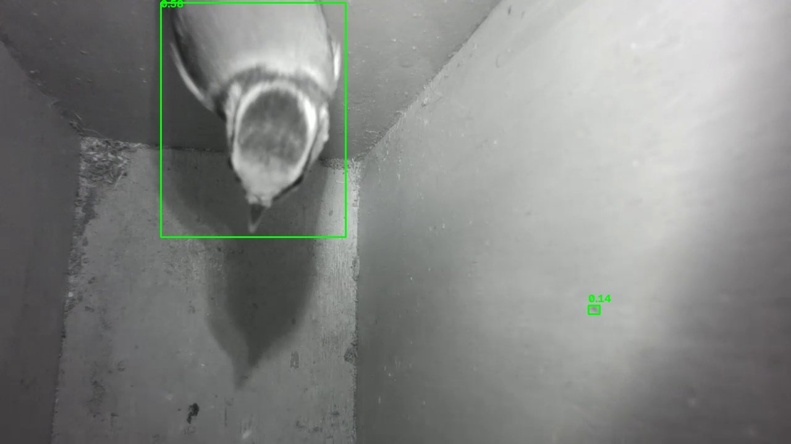
False alarm: sunlight and a dust speck
Later that day, at 13:49, the sun shone through the entrance hole and the box was reported as occupied for about four minutes, although nobody was inside. Two things came together. The sunlight changed the picture, so the motion check fired. And the model took a small dark speck on the right wall for a bird, with scores between 0.13 and 0.18, which was just above the threshold I had set a few days earlier. I now ignore detections that are smaller than 40 pixels. A bird in this picture is about 100 pixels or more, the speck about 20.
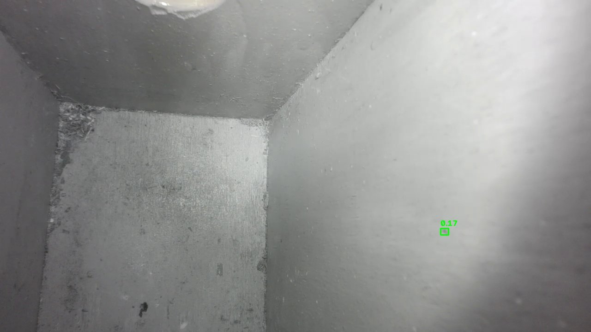
Latest visit: 27 October
At 09:33 a bird looked in for a few seconds. Only head and beak reach into the picture at the top edge, and the beak points down into the box. The model found it with a score of 0.42, the best live value since the sharper check was switched on. Nothing else in the picture was marked, not the dust speck and not the bright patch on the right wall. The bird left before the box counted as occupied.
Latest visits: 28 October
At 08:52 a tit stayed in the box for about a minute and a half. It was the first visit that the model followed almost all the way through: 11 of the 17 saved pictures carry a frame, with scores up to 0.60. The six without a frame show the bird cut off at the edge of the picture, turned away, or so close to the lens that it no longer looked like a bird to the model. One of them is on the Results page.
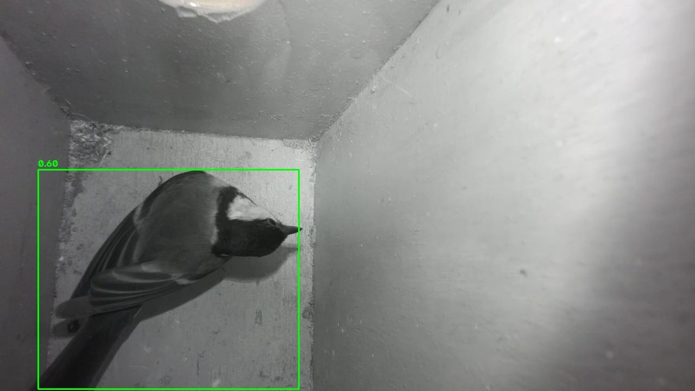
At 10:51 a bird looked in again for a few seconds. Head and beak show at the entrance, and the model came in just under the threshold of 0.13, so the picture was saved as “no bird”, although it plainly shows one.
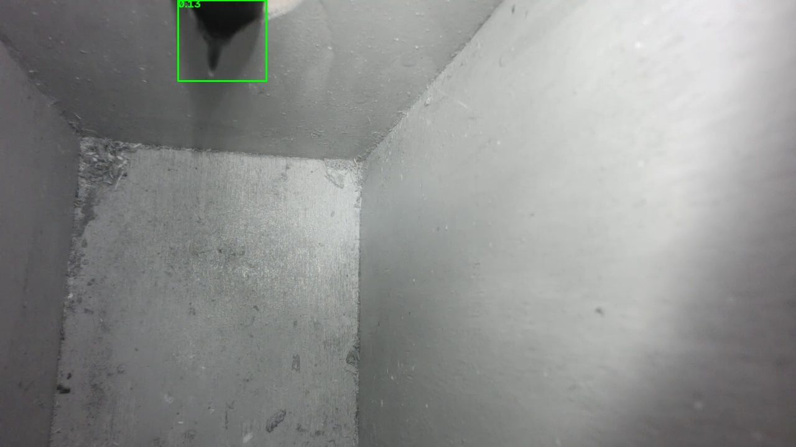
Latest visits: 4 and 5 November
On 4 November a tit looked in twice, at 10:01 and again at 10:43, each time for only a few seconds. Only head and beak reach into the picture at the top edge. The model found it both times, with scores up to 0.37 and 0.65. Two sightings are not enough to count the box as occupied, so only the motion alert went off.
On 5 November at 08:14 a tit hung in the entrance for about 50 seconds. The model confirmed it five times, with scores up to 0.46, and the box was reported as occupied. The tit never came further in than the entrance. Ninety seconds after the last sighting the box counted as empty again.
Latest visit: 8 November
At 12:11 a blue tit came in and stayed for about 45 seconds. For the first seconds only the top edge of the picture showed movement, and the model scored it 0.08, below the threshold. The box was not reported as occupied until the model confirmed the bird at 12:11:32. Then the blue tit walked over the floor of the box, and the scores rose to 0.62 and 0.85, the best live value so far.
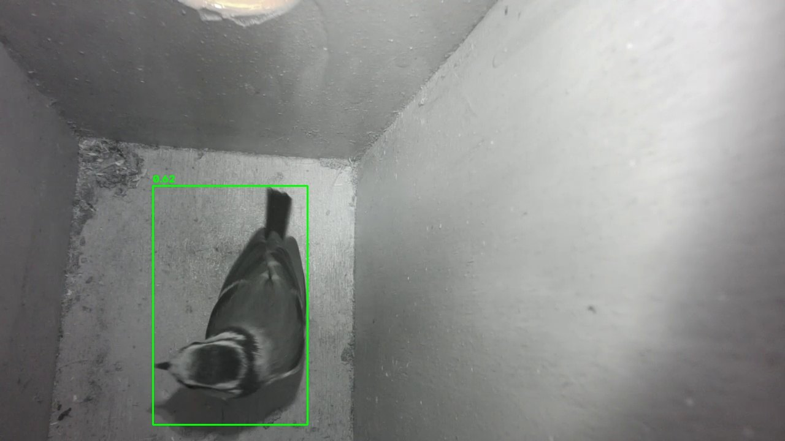
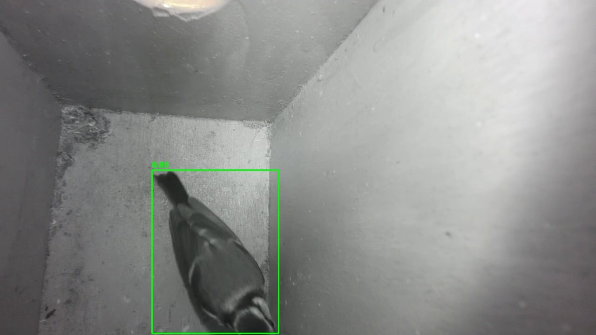
The last picture of the visit shows the take-off. The blue tit is a blur of wings right below the entrance, and the model gave it only 0.06, so the picture was saved as “no bird”. A fast bird is a hard subject for a camera that takes a picture every few seconds.
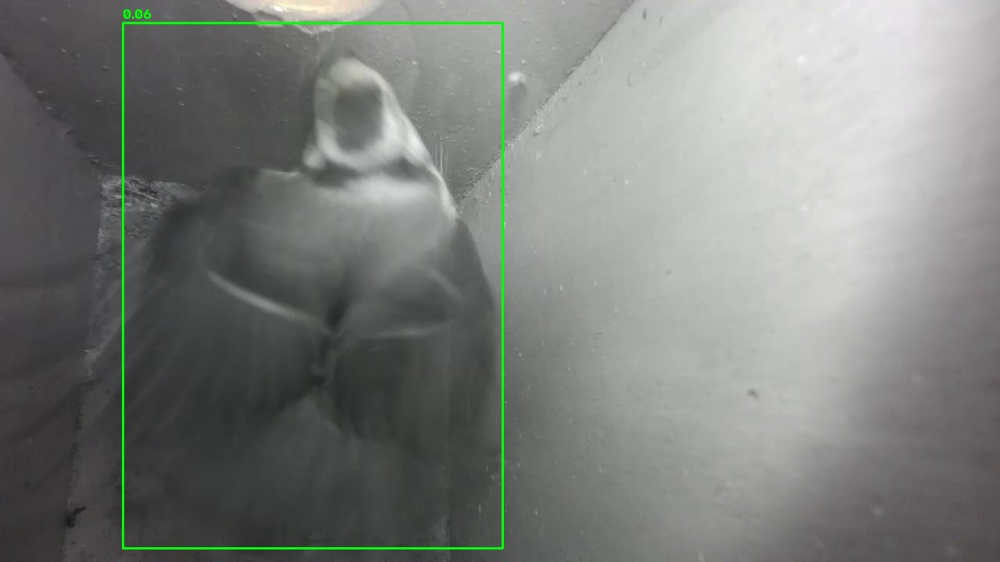
Latest visits: 11 November
Three visits on one morning. At 10:07 a blue tit came in for about 25 seconds. It first looked down into the box from the entrance (scores 0.42 and 0.34) and then stood on the floor.
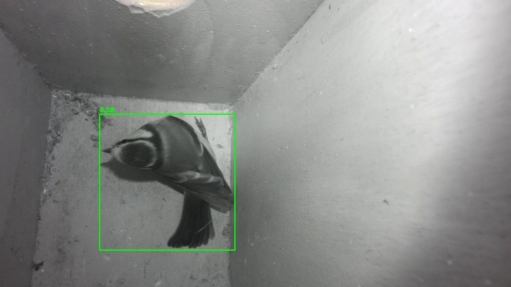
At 11:08 it looked in once, and at 11:09 it came back and stayed almost two minutes, with scores up to 0.56. Thirty-eight seconds after the box counted as empty again, at 11:13, a blue tit came in once more for about a minute (scores up to 0.59). The pictures do not tell whether it was always the same bird.
The model has a hard time with these visits. When the tit stands upright in the box or turns its back to the lens, it often gets no score at all, even though it fills a good part of the picture. This one was not marked.
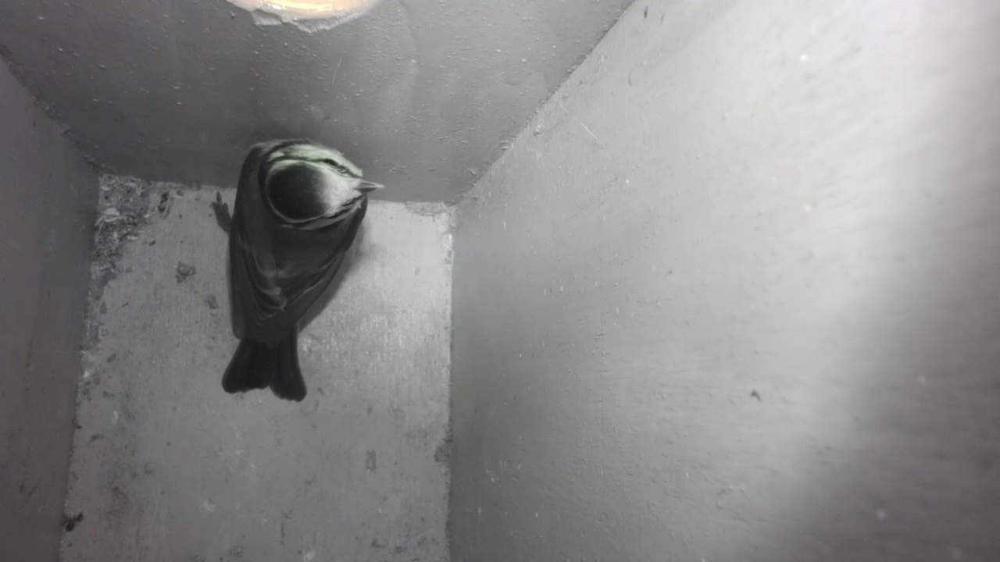
And once more the subject came to the entrance, looked straight into the lens and was not detected.
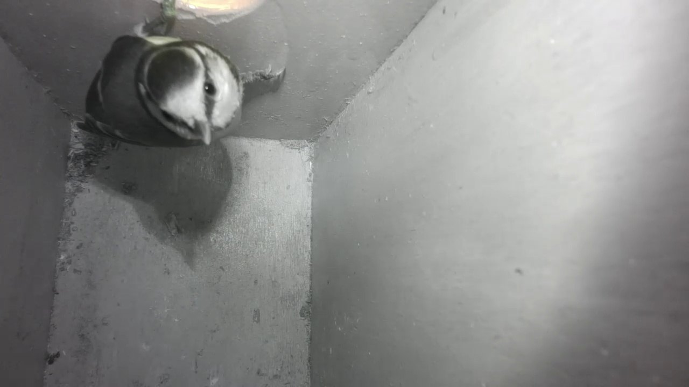
Latest visit: 12 November
At 12:33 a blue tit came in and stayed about a minute, walking across the floor and looking around. This was the first visit watched by the box's own detection model, and the difference is plain: twelve hits in a row, scoring between 0.66 and 0.91, where the old model would have managed two or three.
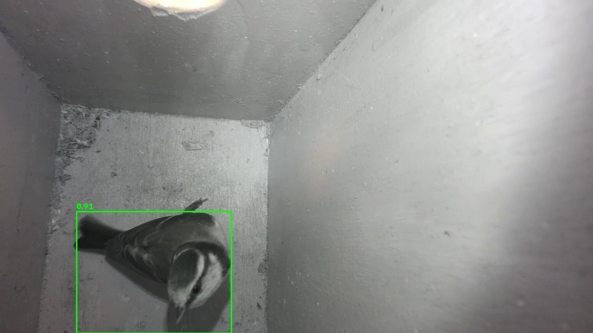
The new model also finds what the old one never saw. Here the bird is almost out of frame, a few tail feathers at the bottom edge, and it is still recognised.
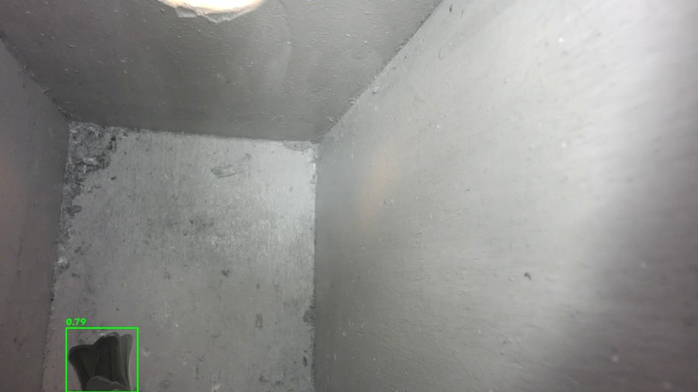
This visit was also the first the box reported by itself. A minute and a half after the bird left, the picture above was published as an incident report.
Birds often look into a box several times before they decide to use it. If one stays, it will show up here, and the pictures will tell.